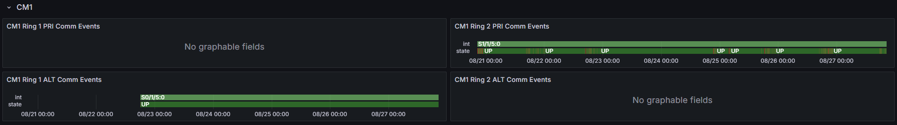
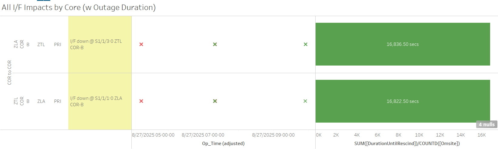
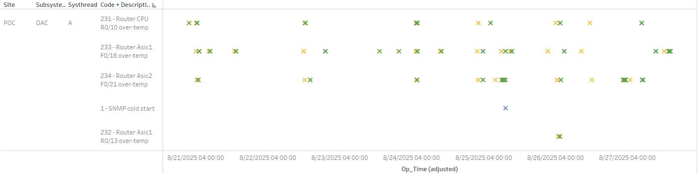
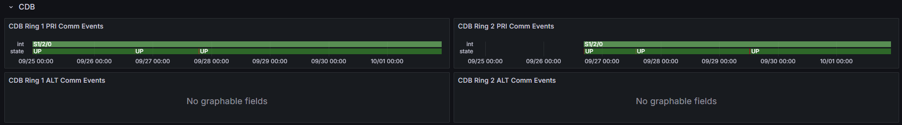
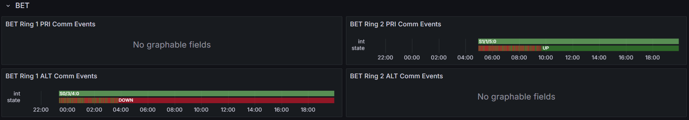
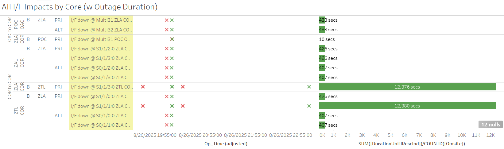
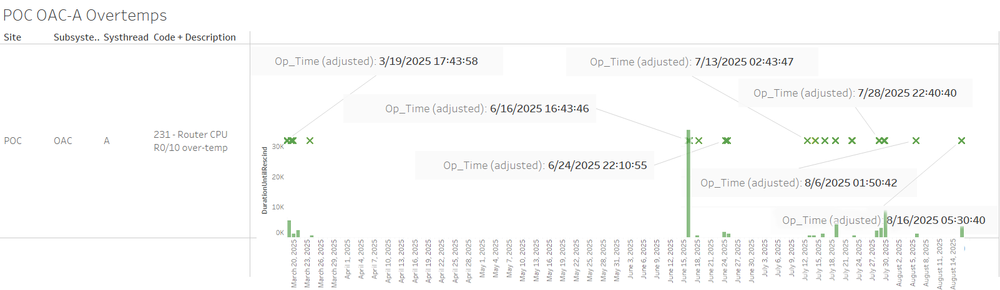
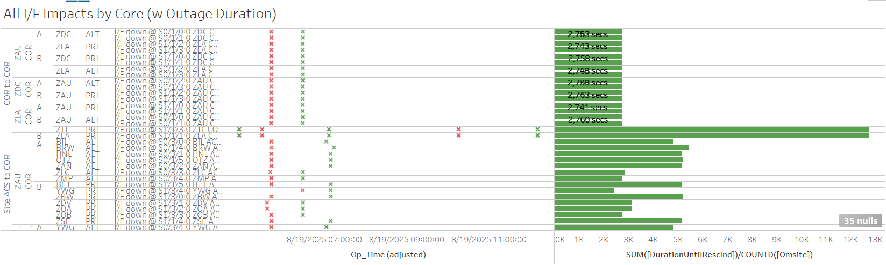
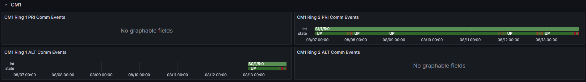

Weekly Highlights 20250827-20250903
8/27-8/28 - POC OAC-A Overtemp (Router Replaced)
- 8/27 08:40 - POC OAC-A SE 231 Router CPU R0/10 overtemp cleared (~62399 seconds overtemp); POC OAC-A Router to be replaced when scheduling allows for technician -- ref LIR 1044493224
8/27 - YFB WRE-A Cracked Antenna Replaced
- 8/27 14:33 - YFB WRE-A to Maintenance;
Tech found WRE-A ANT cracked while performing Annual PM.-- ref LIR 1044730124; restored to Normal at 8/27 16:19
Various Comm Impacts
* Only captures major / long-term comm outages
CM1 Comms
- 8/27 17:35 - CM1 Ring 2 PRI comms flapping; last event cleared at 8/27 18:20 (~229 seconds total)
- 8/27 19:46 - CM1 Ring 2 PRI comms flapping...

Other Sites
- 8/27 05:00 - ZOB Ring 1 PRI / Ring 2 ALT comms
down hard
- 8/27 05:45 - ZOB Ring 2 ALT comms restored (~3240 seconds)
- 8/27 07:08 - ZOB Ring 1 PRI comms restored (~7640 seconds)
- 8/27 05:13 - ZLA-ZTL Ring 2 PRI comms down hard...
- 8/27 07:19 - Line cleared (~7565 seconds), but then went back down ~20 seconds later...
- 8/27 09:54 - Line cleared (~9267 seconds)

- 8/27 11:16 - HNL Ring 1 PRI / Ring 2 ALT + SZ1 Ring 1 PRI / Ring 2 ALT comms down hard; all lines cleared at 8/27 11:46 (~1780 seconds)
7/21/25 YYR Ring 1 Comms
- 7/21 11:44 - YYR Ring 1 comms flapping with extended outages... -- ref LIR 1020579524
- 7/21 14:50 - YYR Ring 1 comms down hard...
- 7/30 -
SATCOM issue YYR<->QWE. YYR tech found broke cable connector on back of receive modem. researching part. - 8/20 Remark: Noted increase of L1/L2 Bias Errors for YYR and frequent flaps to No Data Reported...
11/6/24 YFB Ring 2 Down Hard...
YFB requires satcom upgrades by NavCanada to restore... ref LIR 892056924
- 11/6/24 18:48 - YFB Ring 2 down hard... both rings to YFB down hard...
5/11/23 Mexico Ring 2 Down Hard...
- 5/11/23 17:01 - MX Ring 2 SatCom upgrade begins; MX Ring 2 OFFLINE until upgrade troubleshooting is complete...
- Targeting network upgrade in CY26
List of current offline WREs
List of current offline WREs -- ref WAAS Status Monitor
All Depot shipments to Mexico are halted until the customs process can be finalized
Currently working to assess MX Inventory to determine equipment refresh and restoration needs...
- MMD WRE-A - 3/31/25-... - Freq Std failed -- ref LIR 953873324
- MTP WRE-B - 11/18/24-... - Receiver inits failing -- ref LIR 898330924
- MMX WRE-A - 10/13/24-... - Freq Std failed -- ref LAD 879853824
- MPR WRE-B - 5/3/24-... - Inits failing -- looks like a bad freq std; due to shipping issues, there is no spare Freq Std and no ETA to recover WRE-B... -- ref LIR 44170821

Major Events


Core I/F Status

Comm Events

Mexico Comm Status


Weekly Highlights 20250820-20250827
8/16-8/19 - POC OAC-A Router Overtemp
- 8/16 05:30 - POC OAC-A alarmed with SE 231 Overtemp
- 8/19 21:40 - POC OAC-A alarmed with SE 231 Overtemp
Operators requested POC technicians configure the spare OAC Router to replace OAC-A when desired
- 8/21 04:00 - SE 231, 233, and 234 POC OAC-A
overtemp alarms;
will have evening techs look into replacement.-- ref LIR 1041449624- 8/21 08:10 - POC OAC-A SE 233 Asic1 overtemp
- 8/21 16:50 - POC OAC-A SE 233 Asic1 overtemp
- Events continuing with more frequency...
- 8/25 11:04 - POC-ZLA Ring 1 PRI / ALT comms flapping, likely related to router overtemps; last event cleared at 8/25 11:30 (~878 seconds total)
- 8/27 08:40 - POC OAC-A SE 231 Router CPU R0/10 overtemp cleared (~62399 seconds overtemp); POC OAC-A Router to be replaced on 8/27 -- ref LIR 1044493224

8/19 - BRW WRS Temperature Spike
- 8/19 05:47 - All BRW WREs alarmed with SE 309
Processor Power/Fan Failure indicating
temperature spikes; requested protective
shutdown; all BRW WREs Control Powered OFF at
8/19 14:15;
REQ for dispatching site tech to check EQ on 08/25/25.-- ref LCM 189750921... - 8/26 22:37 - BRW WREs Control Powered ON; restored to Normal at 8/26 23:13; down since 8/19 -- ref LCM 189750921; temperatures immediately started spiking again; tech opened door to shelter -- ref LAD 1044638524...
8/20-8/27 - L1/L2 Bias Errors
- 8/20 01:55 - YYR L1/L2 Bias Error
- 8/21 02:21 - YYR L1/L2 Bias Error
- 8/22 00:35 - MTP L1/L2 Bias Error
- 8/22 00:41 - YYR L1/L2 Bias Error
- 8/23 02:32 - YYR L1/L2 Bias Error
- 8/23 19:03 - MSD L1/L2 Bias Error
- 8/24 09:59 - YYR L1/L2 Bias Error
- 8/25 09:54 - YYR L1/L2 Bias Error
- 8/26 09:51 - YYR L1/L2 Bias Error
- 8/26 16:15 - MTP L1/L2 Bias Error (ZLA only)
- 8/26 16:16 - MSD L1/L2 Bias Error (ZLA only)
8/20 - Subframe Data Err PRN 21
- 8/20 05:03 - All C&Vs alarmed with SE 732 Subframe Data Err 21; SEs rescinded at 8/20 05:15 (~720 seconds)
from correlator: Subframe Data Err 'PRN_Number' - This significant event indicates the issue number for the current subframe of a GPS satellite differs from its previous broadcast yet the current subframe data is identical to the previously broadcast data.
8/21 - BR1 GUS Fault (Switchover-S15)
- 8/25 08:34 - GUS Switchover-S15 -
CM1 GUS to Primary / BR1 GUS Faulted with SE 192
C1 Up-converter Failure;
there is a local Ocilator alarm and NSU alarm (converter backup fault).-- ref LCM 1043212524; Control Powered and restored to Backup at 8/25 09:24 - 8/25 08:43 - MMD / MPR Ring 1 comms down hard due to facility power work; both lines cleared at 8/25 15:39 (~6h 56m)
- 8/25 09:40 - GUS Switchover-S15 - BR1 GUS to Primary / CM1 GUS to Backup due to currently preferred in Backup mode during ongoing troubleshooting
8/23 - MPR WRS Offline due to Lightning
- 8/23 02:10 - MPR WRE-A/C OFFLINE, possibly due to
lightning in the area-- ref LIR 1042484024; Control Powered WRE-B OFF; restored MPR WRE-A/C to Normal at 8/23 02:55; WRE-B remains offline...
8/26 - YYR WRE-B Freq Std Replaced
- 8/26 18:27 - YYR WRE-B Freq Std replaced then
After WRE-B Freq Std configuration was completed, WRE-A and WRE-C are intermittently starting to toggle (off and on). REQ Olivia to recycle WRE-B, WRE-A, WRE-C, one at a time.-- ref LCM 191852521 ; all WREs restored to Normal at 8/26 18:53- YYR WRE-B - 7/4/25-8/26/25 - Freq Std failed -- ref LIR 1010395424
8/27 - YFB WRE-A Cracked Antenna Replaced
- 8/27 14:33 - YFB WRE-A to Maintenance;
Tech found WRE-A ANT cracked while performing Annual PM.-- ref LIR 1044730124; restored to Normal at 8/27 16:19
Various Comm Impacts
* Only captures major / long-term comm outages
CM1 Comms
- 8/20 16:16 - CM1 Ring 2 PRI comms flapping...
- 8/21 16:34 - CM1 Ring 2 PRI comms flapping; last event cleared at 8/22 00:06 (~409 seconds total)
- 8/24 21:26 - CM1 Ring 2 PRI comms flapping; last event cleared at 8/24 22:32 (~200 seconds total)
- 8/25 03:51 - CM1 Ring 2 PRI comms flapping; last event cleared at 8/25 04:19 (~126 seconds total)
- 8/25 17:04 - CM1 Ring 2 PRI comms flapping; last event cleared at 8/25 22:48 (~498 seconds total)
- 8/26 16:47 - CM1 Ring 2 PRI comms flapping; last event cleared at 8/26 22:25 (~906 seconds total)
- 8/27 17:35 - CM1 Ring 2 PRI comms flapping; last event cleared at 8/27 18:20 (~229 seconds total)
- 8/27 19:46 - CM1 Ring 2 PRI comms flapping...
CDB Comms
- 8/21 19:16 - CDB Ring 2 comms down hard; line cleared at 8/21 20:24 (~4067 seconds)
- 8/22 11:25 - CDB Ring 2 comms flapped then down hard; line cleared at 8/22 12:09 (~2566 seconds)

BET Comms
- 8/23 06:40 - BET Ring 1 ALT / Ring 2 PRI comms flapping; last event cleared at 8/23 10:56 (~482 seconds total)
- 8/25 14:03 - BET Ring 1 ALT / Ring 2 PRI comms
flapping...
- 8/25 18:27 - BET Ring 1 ALT comms down
hard...
ISR 0825-1356/1357ZLA<>BET NET-1 ALT-- ref LIR 191566021 - 8/26 03:46 - BET Ring 2 PRI comms cleared (~13814 seconds total)
- 8/25 18:27 - BET Ring 1 ALT comms down
hard...
- 8/26 16:06 - Reset ZLA COR-B to clear open comm issues; BET Ring 1 ALT comms cleared at 8/26 16:15 (~78437 seconds)

Other Sites
- 8/25 03:38 - POC-ZLA Ring 1 PRI / ALT comms flapping, likely related to router overtemps; last event cleared at 8/25 05:59 (~959 seconds total)
- 8/25 08:43 - MMD / MPR Ring 1 comms down hard due to facility power work; both lines cleared at 8/25 15:39 (~6h 56m)
- 8/25 21:34 - ZTL-ZLA Ring 2 PRI comms down hard; line cleared at 8/26 02:15 (~16912 seconds)
- 8/26 19:38 - ZLA-ZTL Ring 2 PRI comms down hard...
- 8/26 20:09 - Reset ZLA COR-B to clear open comm issues; ZLA-ZTL Ring 2 PRI comms cleared at 8/26 20:17 (~2295 seconds)
- 8/26 20:31 - ZLA-ZTL Ring 2 PRI comms
down hard;
ISR0826-2849 || ZLA WCNS <-> ZTL WCNS Net-2 Pri-- ref LIR 191852621; line cleared at 8/26 23:19 (~10062 seconds)

- 8/27 05:00 - ZOB Ring 1 PRI / Ring 2 ALT comms
down hard
- 8/27 05:45 - ZOB Ring 2 ALT comms restored (~3240 seconds)
- 8/27 07:08 - ZOB Ring 1 PRI comms restored (~7640 seconds)
- 8/27 05:13 - ZLA-ZTL Ring 2 PRI comms down hard...
- 8/27 07:19 - Line cleared (~7565 seconds), but then went back down ~20 seconds later...
- 8/27 09:54 - Line cleared (~9267 seconds)
- 8/27 11:16 - HNL Ring 1 PRI / Ring 2 ALT + SZ1 Ring 1 PRI / Ring 2 ALT comms down hard; all lines cleared at 8/27 11:46 (~1780 seconds)
6/25/25-8/22/25 Brewster Comms Down Hard...
- 6/25 09:09 - BR1 Ring 1 ALT / Ring 2 PRI + BR2 Ring 1 ALT / Ring 2 PRI comms down hard...
- 8/20 Status: Circuits delivered from Seattle to Brewster, but no comm to WAAS ARTCCs...
- 8/22 18:15 - First Brewster circuit restored (BR1 Ring 2 PRI); all lines cleared by 8/22 18:28 (~5 million seconds)
7/21/25 YYR Ring 1 Comms
- 7/21 11:44 - YYR Ring 1 comms flapping with extended outages... -- ref LIR 1020579524
- 7/21 14:50 - YYR Ring 1 comms down hard...
- 7/30 -
SATCOM issue YYR<->QWE. YYR tech found broke cable connector on back of receive modem. researching part. - 8/20 Remark: Noted increase of L1/L2 Bias Errors for YYR and frequent flaps to No Data Reported...
11/6/24 YFB Ring 2 Down Hard...
YFB requires satcom upgrades by NavCanada to restore... ref LIR 892056924
- 11/6/24 18:48 - YFB Ring 2 down hard... both rings to YFB down hard...
5/11/23 Mexico Ring 2 Down Hard...
- 5/11/23 17:01 - MX Ring 2 SatCom upgrade begins; MX Ring 2 OFFLINE until upgrade troubleshooting is complete...
- Targeting network upgrade in CY26
List of current offline WREs
List of current offline WREs -- ref WAAS Status Monitor
All Depot shipments to Mexico are halted until the customs process can be finalized
Currently working to assess MX Inventory to determine equipment refresh and restoration needs...
- MMD WRE-A - 3/31/25-... - Freq Std failed -- ref LIR 953873324
- MTP WRE-B - 11/18/24-... - Receiver inits failing -- ref LIR 898330924
- MMX WRE-A - 10/13/24-... - Freq Std failed -- ref LAD 879853824
- MPR WRE-B - 5/3/24-... - Inits failing -- looks like a bad freq std; due to shipping issues, there is no spare Freq Std and no ETA to recover WRE-B... -- ref LIR 44170821
Major Events
Core I/F Status
Comm Events
Mexico Comm Status
Weekly Highlights 20250813-20250820
8/6-8/13 - ZHU WRE Cabinets Down for Power Work
- 8/6 02:35 - ZHU WRE-C to Maintenance Mode and
Control Powered OFF for
Protective Shutdown for replacing elect transfer switches-- ref LIR 184535121; restored to Normal at 8/6 06:15 - 8/12 02:26 - ZHU WRE-A to Maintenance and Control
Powered OFF;
Protective Shutdown for replacing elect transfer switches-- ref LIR 184535021; restored to Normal at 8/12 05:05 - 8/13 01:32 - ZHU WRE-B to Maintenance and Control
Powered OFF for
replacing elect transfer switches-- ref LIR 184535121; restored to Normal at 8/13 04:29
8/13-8/20 - L1/L2 Bias Errors
- 8/13 09:28 - OTZ L1/L2 Bias Error
- 8/13 10:18 - YYR L1/L2 Bias Error
- 8/14 00:15 - MMX L1/L2 Bias Error
- 8/14 04:12 - YYR L1/L2 Bias Error
- 8/15 04:41 - YYR L1/L2 Bias Error
- 8/16 04:19 - YYR L1/L2 Bias Error
- 8/17 06:05 - YYR L1/L2 Bias Error
- 8/18 02:38 - YYR L1/L2 Bias Error
- 8/19 01:06 - YYR L1/L2 Bias Error
- 8/19 05:42 - ZAU L1/L2 Bias Error
8/14 - ZMA WRE-A Faults
- 8/14 22:37 - ZMA WRE-A Faulted with SEs 29,52,53,59; after Control Power, Faulted from Verification Mode at 23:50 with SE 60 Rcvr Init Fault -- ref LCM 1037627624; Control Powered and restored to Normal at 8/15 01:21
8/16-8/19 - POC OAC-A Router Overtemp
- 8/16 05:30 - POC OAC-A alarmed with SE 231 Overtemp
- 8/19 21:40 - POC OAC-A alarmed with SE 231 Overtemp

Operators requested POC technicians configure the spare OAC Router to replace OAC-A when desired
8/17 - YFB WRS Subframe Reasonability
- 8/17 03:40 - YFB alarmed with SE 728 Subframe Reasonability and PID WRS Down
8/17-8/18 - BR1 GUS Tap-A SNMP Restarts
- 8/17 19:55 - BR1 Tap-A SNMP Restart
- 8/18 02:24 - BR1 Tap-A SNMP Restart
- 8/18 21:28 - BR1 Tap-A SNMP Restart
8/19 - ZAU Comm Event (MR-205380A)
- 8/19 05:42 - Comm event at ZAU affecting multiple
circuits on both rings;
MR-205380A - Transition from C15454 to FW9500-- ref LIR 1035956224- 8/19 05:42 - ZAU L1/L2 Bias Error
- COR-COR circuits cleared at 8/19 06:28 (~2743 seconds)
- WRS-COR circuis all cleared by 8/19 07:13 (~5462 seconds max)

8/19 - BRW WRS Temperature Spike
- 8/19 05:47 - All BRW WREs alarmed with SE 309
Processor Power/Fan Failure indicating
temperature spikes; requested protective
shutdown; all BRW WREs Control Powered OFF at
8/19 14:15;
REQ for dispatching site tech to check EQ on 08/25/25.-- ref LCM 189750921...
8/20 - Subframe Data Err PRN 21
- 8/20 05:03 - All C&Vs alarmed with SE 732 Subframe Data Err 21; SEs rescinded at 8/20 05:15 (~720 seconds)
from correlator: Subframe Data Err 'PRN_Number' - This significant event indicates the issue number for the current subframe of a GPS satellite differs from its previous broadcast yet the current subframe data is identical to the previously broadcast data.
Various Comm Impacts
* Only captures major / long-term comm outages
CM1 Comms
- 8/13 15:59 - CM1 Ring 1 ALT / Ring 2 PRI comms down hard; both lines cleared at 16:05 (~340 seconds)
- 8/13 17:02 - CM1 Ring 1 ALT / Ring 2 PRI comms down hard; both lines cleared at 18:26 (~5037 seconds)
- 8/13 18:36 - CM1 Ring 2 PRI comms flapping until CM1 Ring 1 ALT / Ring 2 PRI comms down hard; CM1 Ring 1 ALT comms cleared at 8/13 20:24 (~1915 seconds); CM1 Ring 2 PRI comms came back up to flapping; last event cleared at 8/13 22:48 (~5053 seconds total)
- 8/14 15:50 - CM1 Ring 2 PRI comms flapping; last event cleared at 8/14 23:12 (~4292 seconds total)
- 8/15 16:06 - CM1 Ring 2 PRI comms flapping; last event cleared at 8/15 21:27 (~977 seconds total)
- 8/18 15:35 - CM1 Ring 2 PRI comms flapping; last event cleared at 8/18 23:54 (~2239 seconds total)
- 8/19 15:27 - CM1 Ring 2 PRI comms flapping; last event cleared at 8/19 22:40 (~1842 seconds total)
- 8/20 16:16 - CM1 Ring 2 PRI comms flapping...

Alaska Sites
- 8/13 04:30 - OTZ Ring 2 PRI comms flapping; last event cleared at 8/13 07:26 (~6963 seconds total)
- 8/13 07:04 - BET / BRW / OTZ comms impacted by
ISR 0813-1212-- ref LAD 1036388624; all lines cleared at 8/13 10:43 (~13182 seconds); same sites + JNU impacted again at 8/13 10:48; all lines cleared again at 8/13 10:52 (~280 seconds) - 8/14 01:08 - OTZ Ring 1 ALT comms cleared (down since 6/25 18:35, ~1mo 2wk 5d) -- ref LIR 1004589824
- 8/16 10:44 - CDB Ring 1 comms flapping; last event cleared at 8/16 12:35 (~4011 seconds total)
Other Sites
- 8/13 23:23 - MMX Ring 1 comms down hard; line cleared at 8/14 00:19 (~56m 45s)
- 8/14 18:58 - ZSU Ring 1 ALT / Ring 2 PRI comms down hard; both lines cleared at 8/15 23:54 (~104195 seconds)
- 8/18 13:54 - ZMP Ring 2 PRI comms down hard; line cleared at 8/18 13:55 (~117 seconds)
- 8/19 05:28 - ZTL-ZLA Ring 2 PRI COR-COR comms down hard; line cleared at 8/19 07:06 (~5841 seconds)
- 8/19 10:15 - ZTL-ZLA Ring 2 PRI COR-COR comms down hard; line cleared at 8/19 12:10 (~6882 seconds)
6/25-8/14 - OTZ Ring 1 ALT Comms
- 6/25 18:35 - OTZ Ring 1 ALT comms down
hard...
ISR 0625-3787-- ref LIR 1004589824 - 8/14 01:08 - OTZ Ring 1 ALT comms cleared (down since 6/25 18:35, ~1mo 2wk 5d) -- ref LIR 1004589824
7/21/25 YYR Ring 1 Comms
- 7/21 11:44 - YYR Ring 1 comms flapping with extended outages... -- ref LIR 1020579524
- 7/21 14:50 - YYR Ring 1 comms down hard...
- 8/20 Remark: Noted
increase of L1/L2
Bias Errors for YYR and frequent
flaps to No Data Reported;
Additionally, YYR is down to 2x WREs
with the B thread down since
7/4/25...
- YYR WRE-B - 7/4/25-... - Freq Std failed -- ref LIR 1010395424
6/25/25 Brewster Comms Down Hard...
- 6/25 09:09 - BR1 Ring 1 ALT / Ring 2 PRI + BR2 Ring 1 ALT / Ring 2 PRI comms down hard...
- 8/20 Status: Circuits delivered from Seattle to Brewster, but no comm to WAAS ARTCCs...
11/6/24 YFB Ring 2 Down Hard...
YFB requires satcom upgrades by NavCanada to restore... ref LIR 892056924
- 11/6/24 18:48 - YFB Ring 2 down hard... both rings to YFB down hard...
5/11/23 Mexico Ring 2 Down Hard...
- 5/11/23 17:01 - MX Ring 2 SatCom upgrade begins; MX Ring 2 OFFLINE until upgrade troubleshooting is complete...
- Targeting network upgrade in CY26
List of current offline WREs
List of current offline WREs -- ref WAAS Status Monitor
All Depot shipments to Mexico are halted until the customs process can be finalized
Currently working to assess MX Inventory to determine equipment refresh and restoration needs...
- YYR WRE-B - 7/4/25-... - Freq Std failed -- ref LIR 1010395424
- MMD WRE-A - 3/31/25-... - Freq Std failed -- ref LIR 953873324
- MTP WRE-B - 11/18/24-... - Receiver inits failing -- ref LIR 898330924
- MMX WRE-A - 10/13/24-... - Freq Std failed -- ref LAD 879853824
- MPR WRE-B - 5/3/24-... - Inits failing -- looks like a bad freq std; due to shipping issues, there is no spare Freq Std and no ETA to recover WRE-B... -- ref LIR 44170821

Major Events


Core I/F Status

Comm Events

Mexico Comm Status